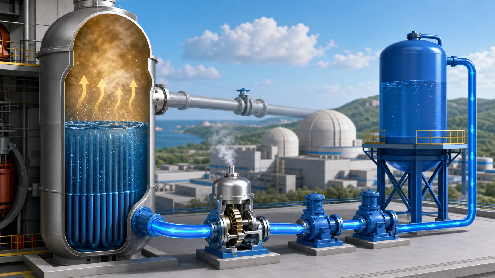
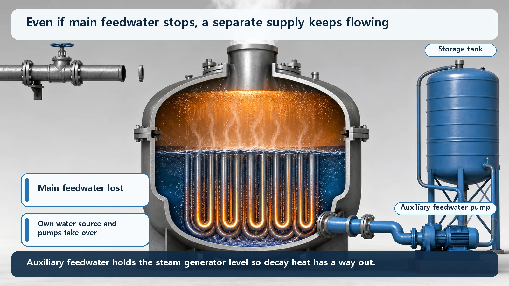
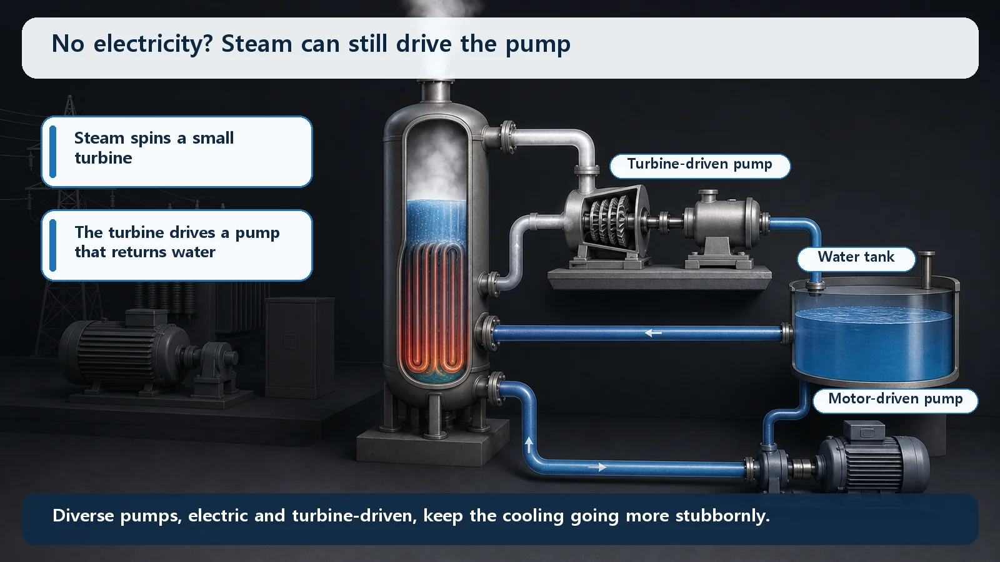

Reactor Types & Plant Systems · 190
Before the Kettle Boils Dry — Why the Auxiliary Feedwater System Is Needed
Like topping up a kettle before it boils dry, auxiliary feedwater keeps the steam generators supplied so decay heat always has a way out.

The auxiliary feedwater system is a safety system that keeps water flowing into the steam generators when main feedwater stops. Decay heat remains after shutdown and leaves through the steam generators as steam, and the events that trip a reactor often stop main feedwater too, so an independent backup with its own tank, multiple pumps and diverse power is essential.
Ever forgotten a kettle on the stove? Leave it long enough and all the water boils away until the bottom glows red-hot. While there's water inside, the kettle holds steady at around 100°C however fierce the flame; once the water runs out, it's a different story. The nuclear plant system we're looking at today is the "hand that quietly tops up the kettle before it boils dry." It's called the auxiliary feedwater system.
Next to the reactor sits a big kettle that never stops boiling
A pressurized water reactor has a large component called the steam generator. It works just like that kettle. Water heated in the core (primary coolant) flows through thousands of thin tubes inside the steam generator, heating and boiling the separate water around the tubes (secondary-side water). The steam made this way spins the turbine to make electricity.
One fact to hold on to: the water in a steam generator doesn't just sit there; it keeps leaving as steam, just like a boiling kettle's water keeps disappearing as vapor. So someone has to keep refilling it. When the plant runs normally, that job belongs to the normal feedwater system, usually called main feedwater. Large pumps push in plenty of water to keep the steam generator level just right.
The catch: heat remains even after the reactor stops
"But once the reactor is shut down there's nothing left to boil, so surely you don't need to refill it?" This is the most common misunderstanding. Inserting the control rods stops fission almost instantly, but the heat released by radioactive material made up to that point as it decays on its own, called decay heat (residual heat), doesn't switch off. Quite a lot of heat comes out right after shutdown and it fades only gradually, so cooling has to continue for a long time.
Follow the decay heat's path. Heat from the core rides in the primary coolant to the steam generator, boils the secondary-side water into steam, and the steam carries the heat away. So even after shutdown, the steam generator is still working as the outlet for discarding heat, and for that it needs water on its secondary side. If the water runs out and the steam generator dries out, the place that takes over and discards the core's heat is gone, and the primary system's temperature and pressure begin to rise.
The water supply fails just when water is needed most
"Then let main feedwater keep refilling it." But there's an awkward situation designers lose sleep over: the very event that shuts the reactor down often stops main feedwater along with it.
If outside power to the plant is lost, the big main feedwater pumps running on it stop too; a sudden turbine trip can also leave them stopped. "The moment water is needed most" and "the moment the usual supply is cut" tend to arrive together. It's like the drinks station closing at the exact stretch of a marathon where you're most exhausted.
So a completely separate, independent backup water supply is essential: the auxiliary feedwater system. In one sentence: the auxiliary feedwater system is a safety system that, when main feedwater stops, injects emergency water into the steam generators using its own separate water tank and power, keeping open the path by which decay heat escapes.

Don't be fooled by the word "auxiliary" — why this backup is special
Auxiliary feedwater isn't just "one more spare pump bolted on." It's carefully designed in layers so that it almost never fails:
First, it has its own water tank. It always keeps a dedicated store of water that doesn't share a path with main feedwater, so whatever happens on the normal side affects it less.
Second, it has several pumps. They're split into multiple independent trains so that if one fails, another takes over right away. One failure must not stop the whole function: a staple of nuclear safety design.
Third, and this is the coolest part, the pumps are deliberately powered in different ways. There are usually electrically driven pumps (motor-driven) and steam-driven pumps (turbine-driven). The turbine-driven pump uses the very steam coming from the steam generator to spin a small turbine that pumps the water in. So even in the worst blackout, with all the plant's electricity lost, this pump keeps running as long as the steam generator still makes steam: the last water supply still alive when the power is completely gone.
Fourth, it doesn't wait for someone to press a button. When the steam generator level drops dangerously low or a loss of main feedwater is detected, the auxiliary feedwater system wakes up automatically and starts injecting water.

Put very simply
You can write what this system does in one line, no complicated math needed:
Water leaving as steam ≈ water added by auxiliary feedwater
As long as this balance holds, the steam generator level is protected and the decay heat keeps leaving with the steam. The left side is set by how much decay heat remains in the core; the right side depends on how well the system injects water. Holding the two in balance is the whole reason it exists.
Neighbors that are easy to confuse
Main feedwater vs auxiliary feedwater. Both put water into the steam generators, but main feedwater is the everyday worker that fills them at high flow, while auxiliary feedwater is the emergency backup that adds just what decay heat removal needs when main feedwater stops. Auxiliary feedwater moves far less water, but its safety importance is actually greater.
Auxiliary feedwater vs safety injection. These are often lumped together, but they put water on completely different "sides." Auxiliary feedwater adds water to the steam generators' secondary side, cooling the core indirectly; safety injection, used in events such as a loss of coolant, adds water directly to the primary side, the reactor coolant system. One is like topping up the water around the outside of a double boiler; the other is like adding broth to the pot itself.
Auxiliary feedwater vs the residual heat removal system. The residual heat removal system finishes removing decay heat after the reactor has cooled enough and its pressure has dropped; auxiliary feedwater lets heat be discarded through the steam generators right after shutdown, while things are still hot and at high pressure. They work at different times and by different paths.
Today's takeaways
- Even after shutdown the steam generator is the outlet for decay heat, and its secondary water keeps leaving as steam, so it must be refilled.
- Main feedwater does this normally, but the events that shut a reactor down (such as loss of outside power) often stop main feedwater too, so an independent backup is essential: the auxiliary feedwater system.
- It is a safety system with its own water tank, multiple pumps, diverse power (electric and steam, notably a turbine-driven pump that runs through a blackout) and automatic start.
- Put very simply, it keeps the balance "water leaving as steam ≈ water added by auxiliary feedwater," and that balance keeps decay heat's way out open.
- Despite the name "auxiliary," its safety importance is great; it adds water to the secondary side, unlike safety injection (directly to the primary side) and the residual heat removal system (which works at low temperature and pressure).
A hand that tops up the kettle before it boils dry, ready to move on its own even when all power is gone: auxiliary feedwater shows why nuclear plants stack independent backups behind every function.